اقْرَأْ بِاسْمِ رَبِّكَ الَّذِي خَلَقَ
Read the Qur'an with its tafsirs,
the hadith with its chain
62 tafsirs, 17 hadith books, 17 commentaries, 8 classical dictionaries and 29 reciters in a single program. Read, listen and memorize; as you recite, the program listens and tells you the word you skipped. Research and share. Interface in English, Arabic and Turkish. Free; no internet needed once installed.
Free download for WindowsIntroduction video (3 min, narrated in Turkish) · Recitation: Maḥmūd Khalīl al-Ḥuṣarī (EveryAyah)
Qur'an
Open a verse and its Arabic text, translation and the tafsirs you chose come up on the same screen.
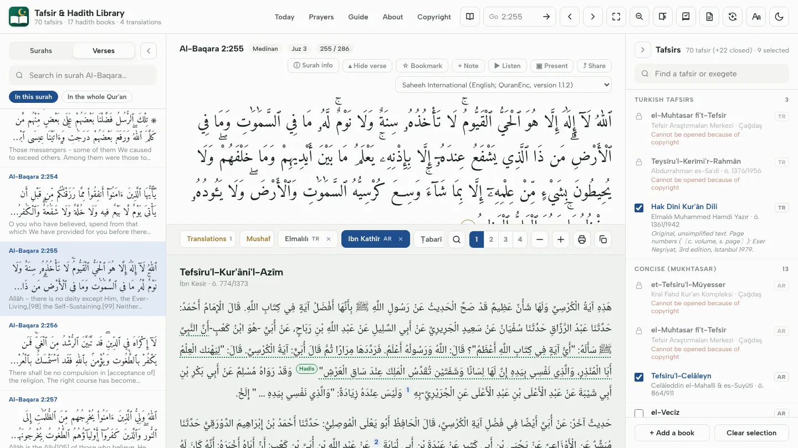
62 tafsirs, one click away
From Ṭabarī to Elmalılı; tafsirs by narration, by reasoning and ishārī, each beside the verse.
- Switch with tabs: Ṭabarī, Qurṭubī, Rāzī, Ibn Kathīr, Elmalılı…
- Translations: English (Saheeh International) and three Turkish: Elmalılı (1935), King Fahd Complex, Rowwad Centre
- Presentation mode: full screen in large type for mosque lessons and projectors
- Notes, highlights, bookmarks; export to Word and PDF
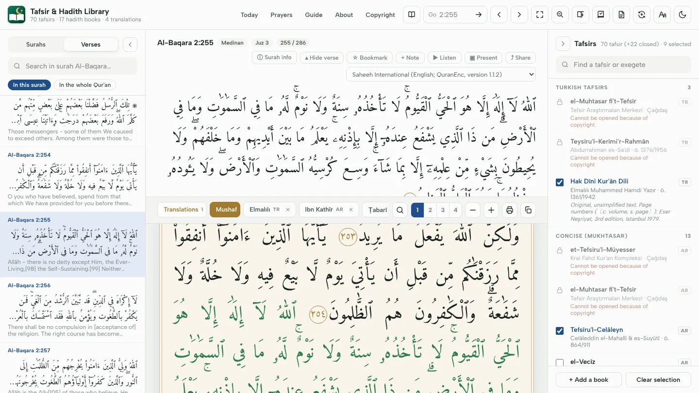
The Diyanet hafiz mushaf and the Medina mushaf
604 pages, in the page layout of the Diyanet hafiz mushaf or of the Medina mushaf. In the Medina layout, the printed line breaks and illuminated sura headings; tajweed colours optional.
- Turkish mushaf marks: round sukun, the familiar tanwin (or the Medina spelling)
- Amiri Quran and the King Fahd Complex's Hafs font
- Reading plan and khatm: daily goal, streak and progress
Listen and memorize
29 reciters, full-screen reading on the phone, a review calendar that makes memorization last, and a recitation follower that listens as you read.
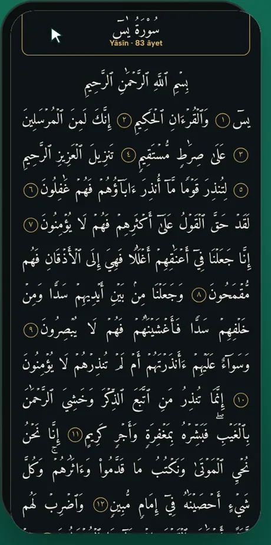
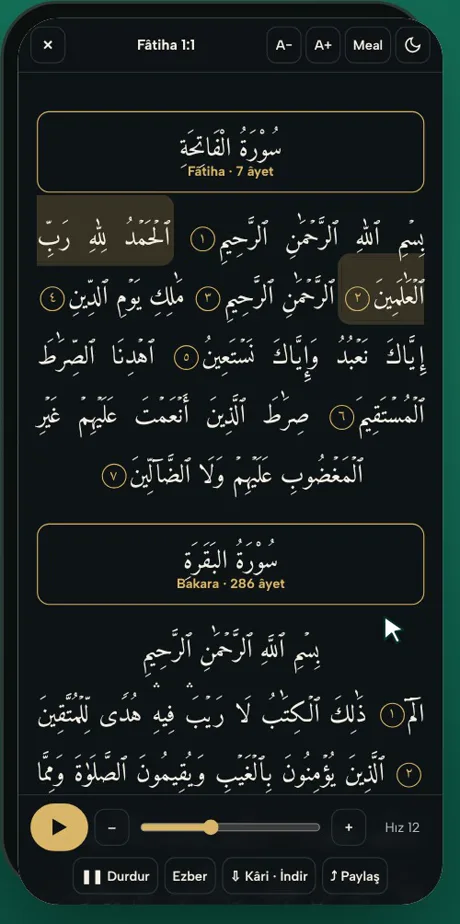
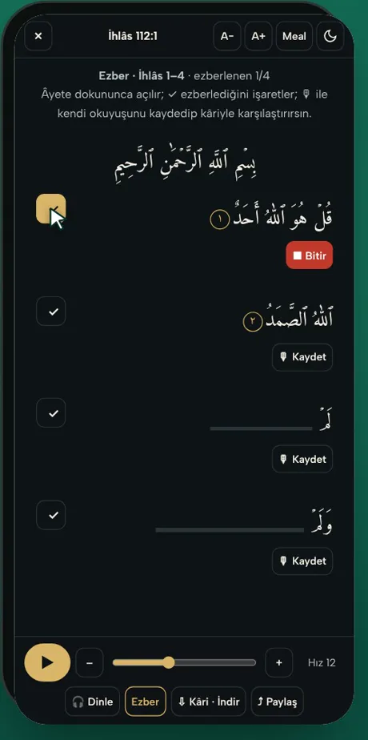
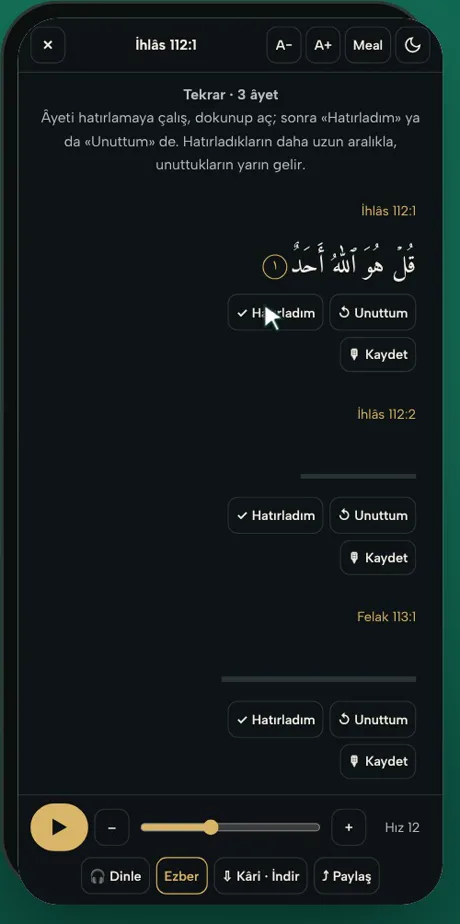
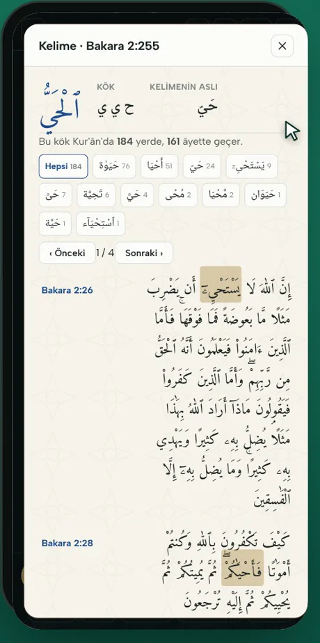
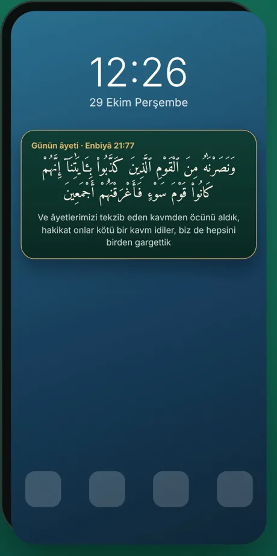
29 reciters
Alafasy, Ḥuṣarī, ‘Abd al-Bāsiṭ, Minshāwī, Sudays, Shuraym, Shāṭirī, Ghāmidī and others; mujawwad and teaching recitations included. Each verse can be repeated as often as you like.
Offline listening
Download the surah, the juz or the whole Qur'an from the reciter you choose; listen on the road too.
With your own voice
Record your recitation on the memorization screen, then listen to it after the reciter and compare. Recordings stay on your device only.
For huffaz: page by page
For those who memorise by the page, the reading and listening screen shows the pages of the Diyanet hafiz mushaf: a line and the page number where each page begins, its first word coloured, and your page in the top bar.
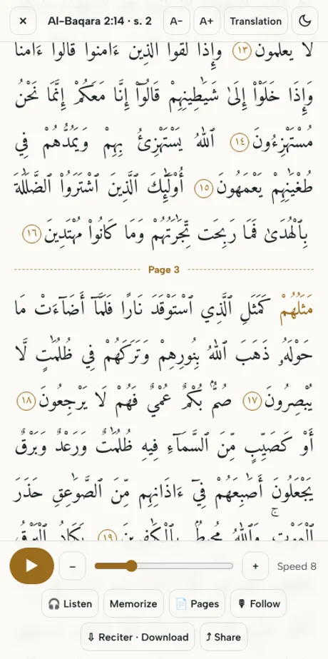
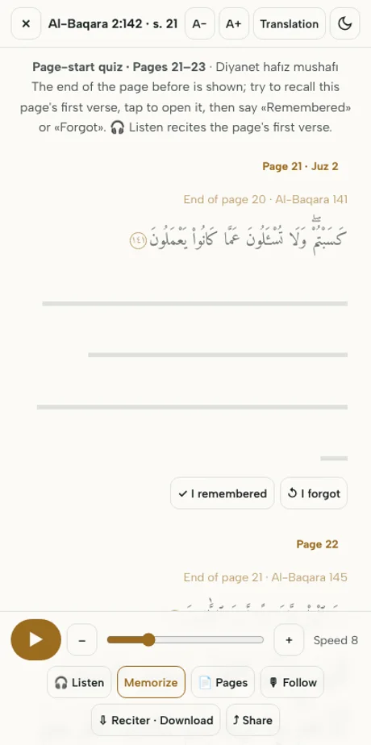
Page by page
One page stays on the screen and is turned by swiping; while listening, the next page opens when one ends.
Memorise by the page
Set memorisation by sura and verse, or by page — «pages 48–49»; the review schedule brings your pages back.
At the end of a page
While listening, stop when a page ends, or hear each page 2, 3 or 5 times. The Medina mushaf's pages if you prefer.
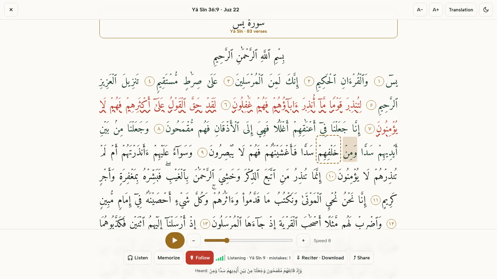
It listens as you recite
Recite to the microphone: the text flows with you, and a word you skip or misread sounds a warning tone and is marked in red. For hifz and checking what you have memorized.
- Trained on Qur'an recitation: speech recognition (Tarteel); in memorization the hidden verses open as you recite
- Skipped words, sentences and verses are caught; tap a verse to choose where you begin
- Your voice never leaves the device: recognition runs on the device; the model is downloaded once (about 120 MB)
- It checks the words, not vowel marks or the finer points of tajweed; at least 2.5 GB of free memory is needed
Hadith
17 books, 183,373 hadiths; with their chains, commentaries, narrators and the scholars' verdicts.
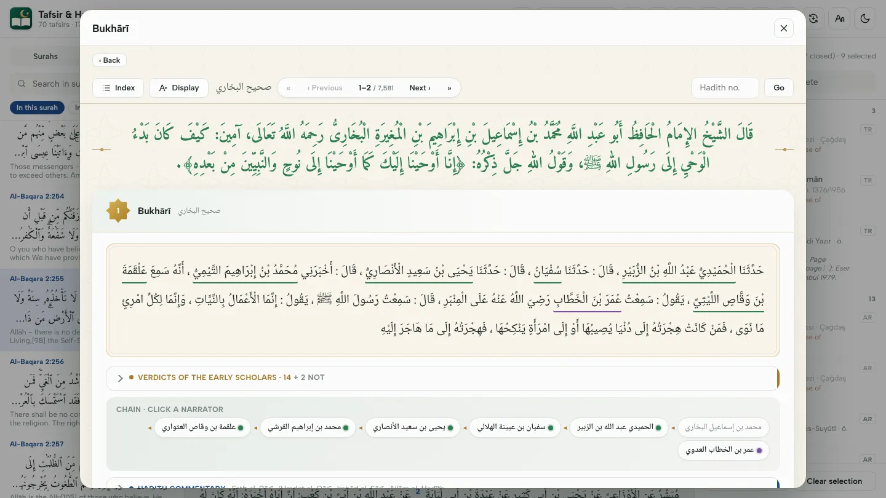
Every narrator marked
Tap the narrators in the chain; the verdicts of the early critics are right under the hadith.
- The Six Books, Muwaṭṭa’, Musnad, Dārimī, Mustadrak, Ibn Ḥibbān, Ibn Khuzayma, the Muṣannafs, Bayhaqī, Majma‘ al-Zawā’id
- Compare narrations: the different wordings of the same hadith
- Takhrīj report (Word) and hadith notes
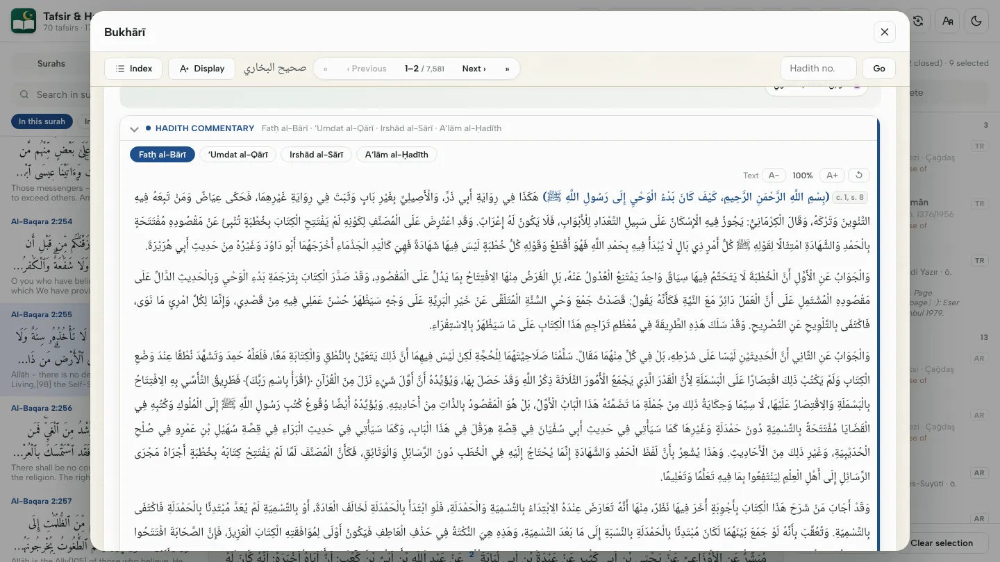
17 commentaries, under the hadith
Fatḥ al-Bārī, ‘Umdat al-Qārī, al-Minhāj, ‘Awn al-Ma‘būd, Tuḥfat al-Aḥwadhī…
- Search the commentaries
- With volume and page; can be cited as a source
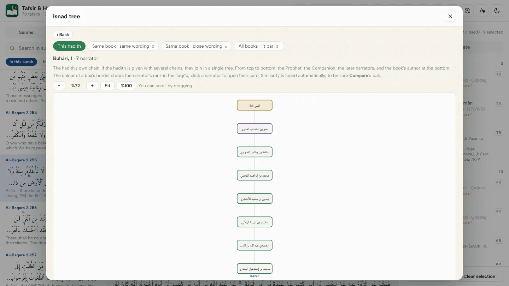
Isnad tree
All chains of a hadith across all books in a single tree; the common narrator (madār) marked.
- Link between two narrators
- Topic index: hadiths by subject
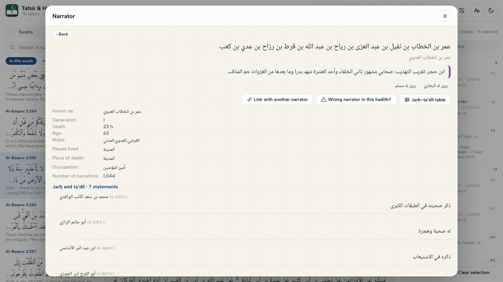
Narrator information
Teachers, students, generation, death and the jarḥ–ta‘dīl statements; entries from the Taqrīb, Tahdhīb, Kāshif and Mīzān.
- All narrations of a narrator and search within them
- Report a wrongly matched narrator in a chain with one click
Tafsir, hadith and fiqh, linked
Reading a verse, you need not search separately for its reports, the discussion of its abrogation, its places in the fiqh books and the schools' views: they are all linked.
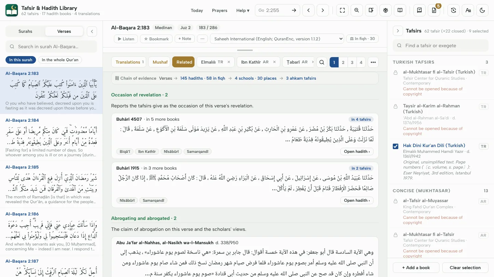
Everything about a verse, in one tab
The hadiths that all the tafsirs in the program quote under the verse, matched with their places in the hadith books; each shows in how many tafsirs it is quoted.
- Occasion of revelation: the reports the tafsirs give as the occasion of the verse's revelation
- Abrogating and abrogated: al-Naḥḥās's al-Nāsikh wa-l-Mansūkh and Ibn al-Jawzī's Nawāsikh al-Qur'ān, verse by verse: the claim of abrogation and the scholars' views
- Tap a tafsir's name to open it at the verse; «Open hadith» shows the hadith with its chain, commentary and narrators
- From hadith to tafsir: the «📖 In the tafsirs» box in a hadith's window lists the verses and tafsirs that quote it
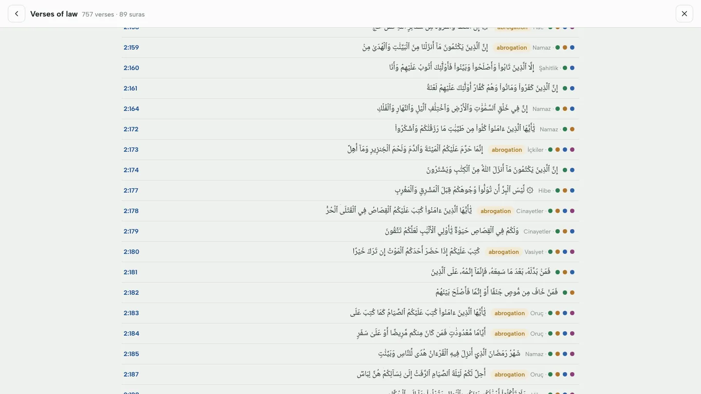
From the verse to the schools' views
The ⛓ Chain of evidence line at the top of the Related tab sums up the path: verse → the hadiths its tafsirs quote (and how many of them the fiqh books use) → the schools → the ahkam tafsirs.
- The schools' views: tap a subject to open the four schools' books on it side by side
- Map of the verses of law: 757 verses taken up by al-Jaṣṣāṣ, Ibn al-'Arabī and Kiyā al-Harrāsī, in the order of the suras; verses with a discussion of abrogation are marked
- Term bridge: tap a fiqh term in a tafsir; from the dictionary go to a search of the fiqh books and to the comparison of the schools on that subject
Fiqh · in the computer version
The core texts of the four schools, their great commentaries, and works of usul, qawa'id and ahkam: 30 books, about 7.8 million words. On Windows, Mac and Linux.
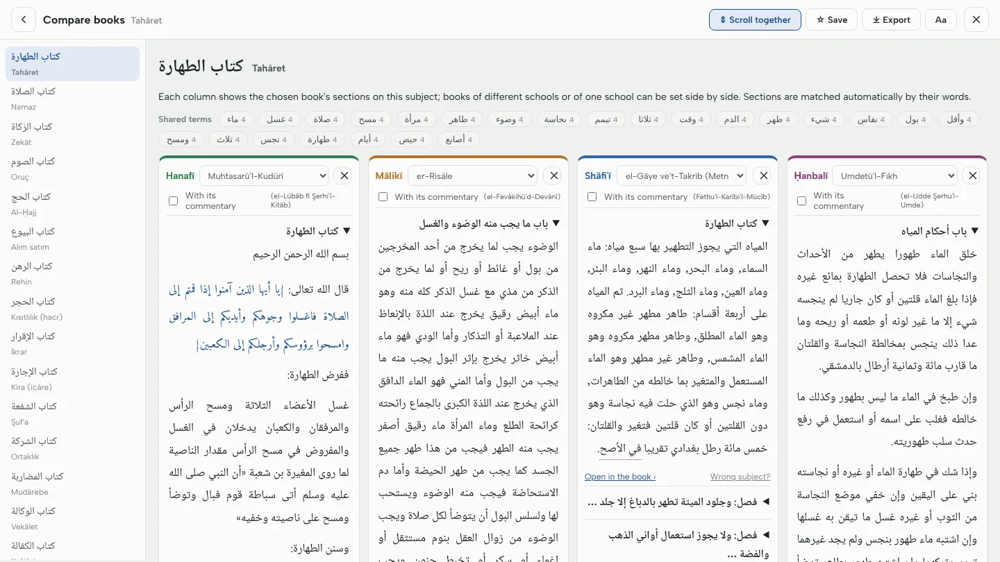
The four schools side by side
Hanafi, Maliki, Shafi'i and Hanbali books on the same topic, column by column; sections are matched by their words.
- Text and commentary together: al-Quduri, al-Hidaya and Fath al-Qadir, al-Ikhtiyar, al-Risala, al-Minhaj, al-'Umda and more
- From verse and hadith to fiqh: «⚖ In fiqh» shows the chapters where a verse or hadith is cited; the hadiths' sources
- The schools' terms (al-asahh, zahir al-riwaya, al-mashhur…) defined from each school's own sources
- Takhrīj books: Naṣb al-Rāya, al-Talkhīṣ al-Ḥabīr, Bulūgh al-Marām; dictionary of fiqh terms: al-Ta'rīfāt, Anīs al-Fuqahā', al-Mughrib and others
- The Mecelle (the Ottoman civil code, 1,851 articles, by article number) linked to the maxims of al-Ashbāh wa-l-Naẓā'ir
- Search in every book, notes and highlights, memorising texts, export to Word
Why is fiqh not on the phone?
We placed the fiqh library in the Windows, Mac and Linux versions only, on purpose. Thirty works with their commentaries hold about 7.8 million words; a single chapter of a great commentary such as Fath al-Qadir or Radd al-Muhtar runs to thousands of lines. Comparing the four schools side by side, reading a text with its commentary and searching every book need a wide screen and plenty of memory.
Putting all of this on phones would make the app much larger and slow it down, or even make it close, on mid-range and entry-level devices — spoiling it for the great majority who use it for the Qur'an, translations, tafsir and hadith. So we keep the phone app light and fast.
Working on fiqh texts is specialist work anyway: comparative reading, setting a text against its commentary, taking notes and citing sources are done at a computer. Anyone who wants the fiqh section can install the program free on a Windows, Mac or Linux computer or a Windows tablet — see Download below.
Your notes in one place, kept safe
The notes, highlights and bookmarks you make in the tafsirs, on the verses, in the hadiths and in the fiqh books, in one window, each with its place. All of them are kept safe and, if you wish, synced across your devices.
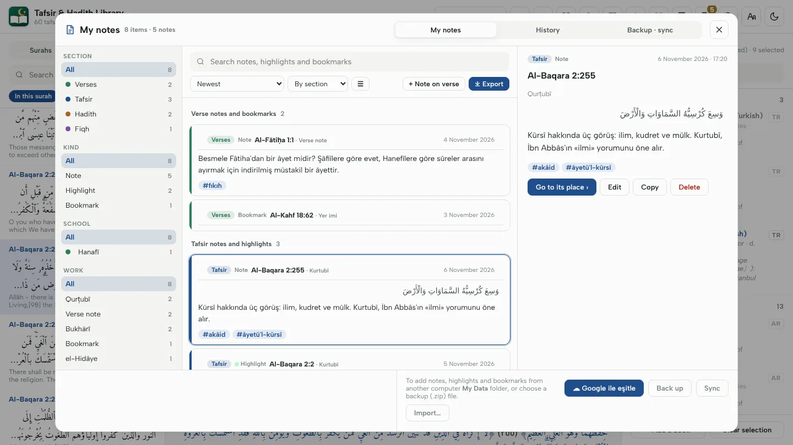
Every note knows its place
Each card names its section and exact place: «al-Baqara 2:255 · Qurtubi», «Bukhari, 1», «al-Hidaya · Hanafi · Kitab al-Tahara». «Go to its place» opens the work right there.
- Filters: section (verse, tafsir, hadith, fiqh), kind (note, highlight, bookmark), school, work, tag
- Search, sort, group: newest, Mushaf and book order; by section, work or tag
- Tags become topic files: verse, hadith and fiqh notes of one tag together
- Export the listed notes to Word
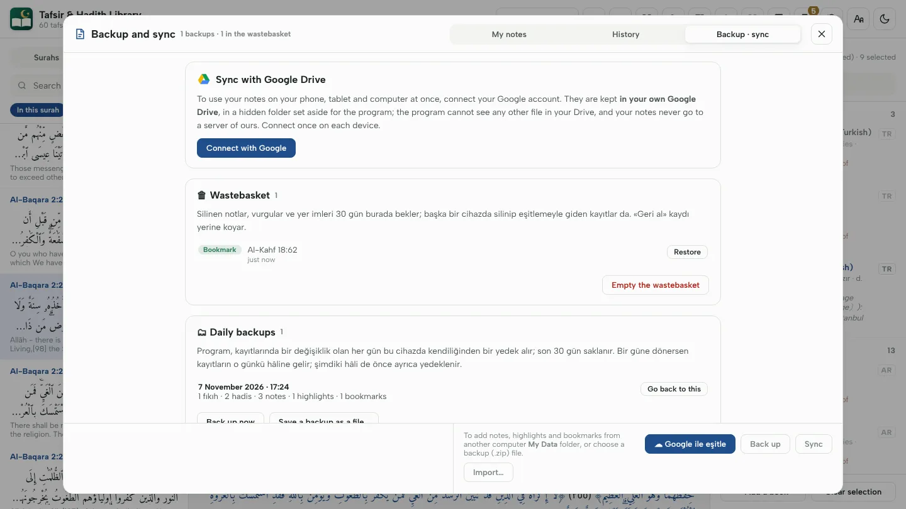
Your notes are never lost
The notes you worked on are backed up every day, deleted ones can be restored, and they stay the same on your phone, tablet and computer.
- Google Drive sync (optional): notes in your own Drive, in a hidden folder set aside for the program; it cannot see your other files, and there is no server of ours
- Daily automatic backup: the last 30 days; go back to any day
- Wastebasket: deleted items wait 30 days, including those deleted on another device
- Offline too: sync by code on the same Wi-Fi, and a one-file backup
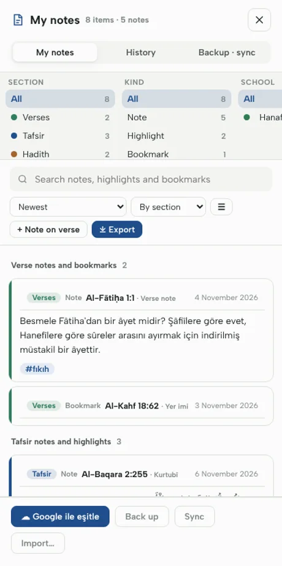
Dictionary, search, sharing
The word you wonder about, the phrase you are looking for, the verse you want to send to those you love.
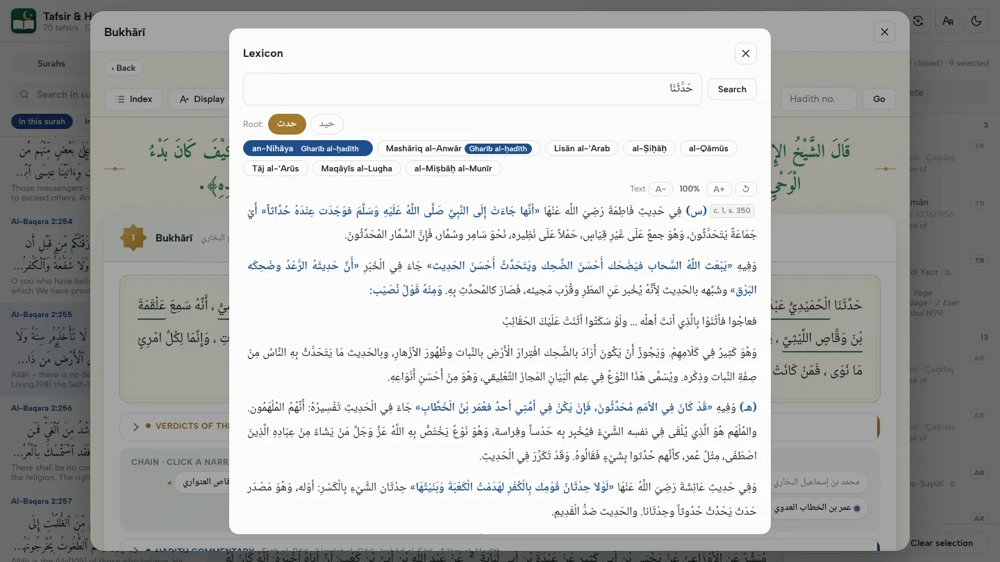
Tap a word
an-Nihāya, Lisān al-‘Arab, Tāj al-‘Arūs, al-Qāmūs… eight classical dictionaries; rare words marked.
- Mashāriq al-Anwār and al-Fā’iq for the rare words of hadith
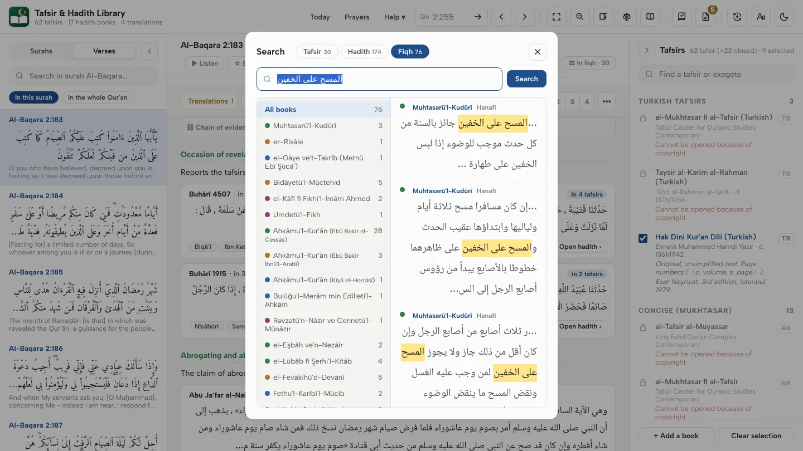
One box: tafsir, hadith, fiqh
An Arabic, English or Turkish word, across all tafsirs, translations, hadiths and fiqh books at once; the counts show on the Tafsir · Hadith · Fiqh tabs.
- Exact phrase or all words; filter by work and book
- Tap a hadith or fiqh result to open it right there
- Vowel marks and diacritics are ignored in the search
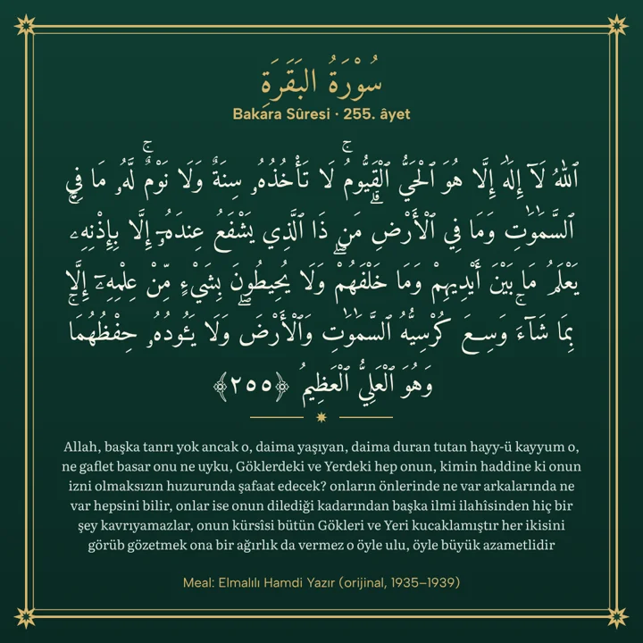
Verse and hadith card
Turn a verse with its translation, or a hadith with its book and number, into an elegant image.
- Square, portrait, story formats; four colours
- On the phone to WhatsApp and Instagram; on the computer save or copy
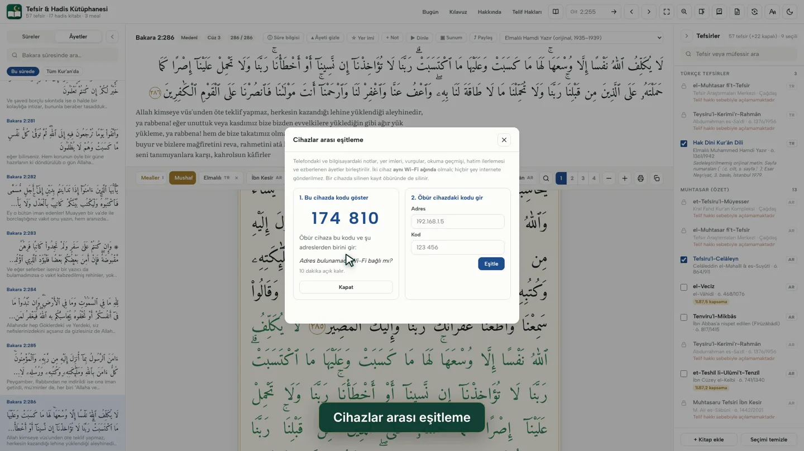
Phone, tablet and computer together
Notes, bookmarks, highlights, khatm and memorisation stay the same on all your devices through your own Google Drive — or offline, on the same Wi-Fi, with a 6-digit code.
- Nothing is sent to a server of ours
- Daily automatic backup, a wastebasket and a one-file backup
In three languages: Türkçe · English · العربية
All the program's menus, buttons, guide and tour are available in Turkish, English and Arabic. The language changes with one tap in the Display window; on first start the program follows your device's language. The texts of the books themselves (tafsir, hadith, commentary, dictionary) stay as they are in their sources.
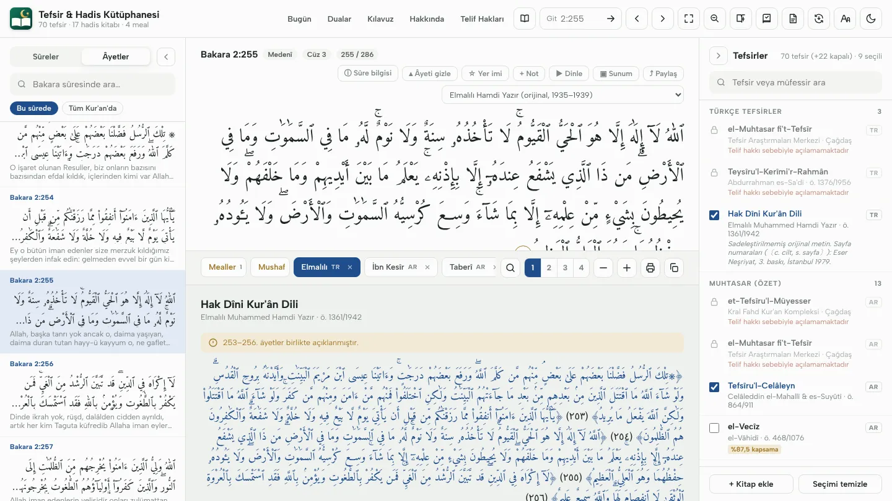
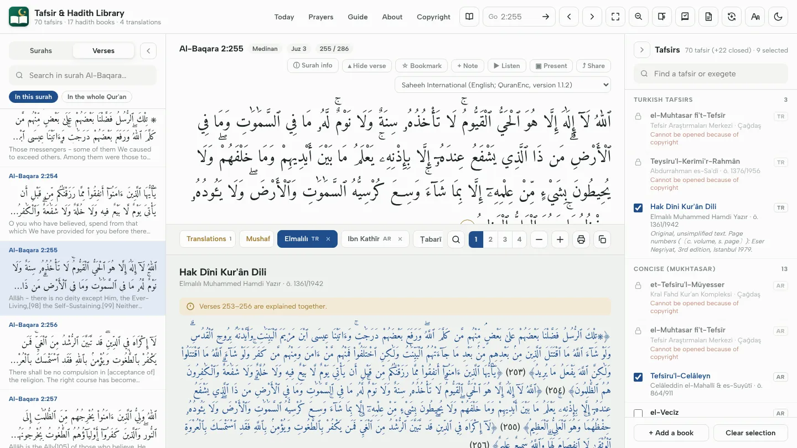
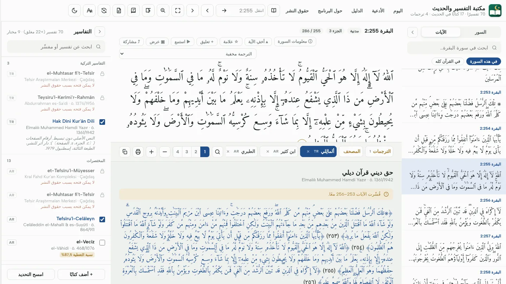
In English
Read the Qur'an with 62 tafsirs, 17 hadith books with their chains and commentaries, 8 classical dictionaries and 29 reciters. Free, ad-free and offline once installed — for Windows, Mac, Linux and Android.
بالعربية
اقرأ القرآن مع 62 تفسيرًا، و17 كتابًا في الحديث بأسانيدها وشروحها، و8 معاجم قديمة، و29 قارئًا. مجاني وبلا إعلانات ويعمل دون اتصال بعد التثبيت، على Windows وMac وLinux وAndroid.
How do I change the language?
Display (Aa) › Language. On the phone, from the ⋯ menu at the top: «Display and language». Choosing English opens the English translation; choosing Arabic shows the Arabic text only.
Why are the books in Arabic?
The program was made in Turkey, by Turks, and its interface speaks Turkish, English and Arabic. Yet the tafsirs, hadiths, commentaries and fiqh books are given in their original Arabic. Here is why.
The readers who ask this most are, rightly, those who would like to use the program in their own language. Every menu, the guide, the explanations and the translations of the meanings are available in Turkish and English. But the heart of the library, the source works, is given in the language they were written in, deliberately. This is not a shortcut or an oversight; it is a scholarly choice, and we would like to explain it.
1. The Qur'an was revealed in Arabic; a translation does not take its place
إِنَّآ أَنزَلْنَٰهُ قُرْءَٰنًا عَرَبِيًّا لَّعَلَّكُمْ تَعْقِلُونَ
"We have sent it down as an Arabic Qur'an so that you may understand." (Yūsuf 12:2)
The word of God is Arabic. A translation, however careful, carries one of the meanings the translator found in the verse. A word with several senses, the nuance of a particle, the emphasis that comes from the order of a sentence: these rarely fit into a single sentence of another language. And the tafsirs are commentaries on that Arabic text: the exegete discusses a word's meaning in the lexicon, its grammatical analysis, its variant readings, the occasion of its revelation and the ruling it yields, all on the Arabic itself. Translate the tafsir, and you have translated away the very text it is talking about.
2. For fourteen centuries Arabic has been the common language of the Islamic sciences
In these sciences Arabic is not the language of one nation but the language of learning, much as Latin was in Europe for centuries. Look at the authors in this library: al-Ṭabarī from Ṭabaristān, al-Bukhārī from Bukhara, Muslim from Nishapur, al-Zamakhsharī from Khwarazm, Fakhr al-Dīn al-Rāzī from Rayy, al-Bayḍāwī from Shiraz, al-Māturīdī from Samarqand. None of them were Arabs; all of them wrote in Arabic, because scholars everywhere read it.
The Ottoman scholars did the same. Ebüssuûd Efendi wrote his tafsir Irshād al-'Aql al-Salīm in Arabic, İsmail Hakkı Bursevî his Rūḥ al-Bayān, Molla Hüsrev his Durar al-Ḥukkām, Molla Fenârî his Fuṣūl al-Badā'i', Taşköprizâde his Miftāḥ al-Sa'āda and Kâtib Çelebi his Kashf al-Ẓunūn. In the madrasas, the textbooks were read in Arabic and explained in Turkish. The scholarly heritage is itself Arabic; presenting it as it is, is a way of honouring it.
3. The technical terms were built in Arabic and are lost in translation
Every science speaks through its terms. The terms of the Islamic sciences rest on Arabic roots, were defined over centuries and differ from one another by fine distinctions. A translation either erases these distinctions or creates new confusion. A few examples:
Ḥaddathanā, akhbaranā, 'an: all become "he told us" in translation. In hadith criticism they show how a narrator received the report from his teacher; a narration with "'an" is precisely what the study of tadlīs examines.
Ṣaḥīḥ, ḥasan, mursal, mu'allal: not "correct, fine, sent, defective": each is a judgement built on the chain and the text.
Farḍ, wājib, makrūh taḥrīman: in Ḥanafī fiqh the difference rests on the strength of the evidence; for the Shāfi'īs farḍ and wājib are one. A translation hides this difference between the schools.
Al-aṣaḥḥ, al-ṣaḥīḥ, ẓāhir al-riwāya: they state the rank of a view within a school, and fatwas follow them. This is why the program explains them from each school's own sources.
A researcher's work is precisely with these fine distinctions. An assessment made without knowing which term a translation stands for rests on the translator's interpretation, not on the source.
4. Scholarship cites the original
A thesis, an article, a lesson or a fatwa cites the original work, with the volume and page of its printed edition. This is why the program gives the tafsirs, hadiths, commentaries and fiqh books from their printed editions, with volume and page. Citing a translation puts an intermediary between you and the source; that intermediary's errors and choices pass into your work. In which book and in which wording a hadith comes, how an exegete reads a word: only the original shows it.
5. Size and copyright: an honest account
The works in the program run to tens of millions of words: 62 tafsirs, more than 183,000 hadiths, 17 commentaries, 30 fiqh books. Very few of them have translations, and those that exist are the work of living translators and protected by copyright; we cannot include them without their permission. Many great works, such as Fatḥ al-Qadīr, 'Umdat al-Qārī or Nihāyat al-Muḥtāj, have, as far as we know, no complete translation at all. The classical Arabic texts are a common heritage; we can offer them freely and in full. Translations whose rights holders give permission are opened as permission comes; those are the works shown as locked in the library.
6. A reader with little Arabic is not left alone
Reading the originals does not mean shutting out those whose Arabic is not advanced. The program was built to be that bridge:
- The whole interface, guide and explanations in English, Turkish or Arabic; translations of the meanings beside every verse (Saheeh International in English).
- Tap any word: its meaning in eight classical dictionaries, its root and its places in the Qur'an.
- Fiqh subjects and chapter headings come with their names in your language; the schools' terms with their explanations.
- Search all the books with an Arabic word and see each result in its context.
- Add a translated tafsir or book you own with «Add a book» and read it beside the other tafsirs.
A student who has just begun Arabic thus meets the original step by step; an advanced researcher reaches the source directly and quickly.
In short
This program was made for everyone who wants to return to the sources. The language of the Qur'an, the language of the sciences that explain it and the language in which scholars across the Muslim world, the Ottomans among them, wrote for centuries is Arabic. Presenting the works in that language, as they are, with volume and page, is what faithfulness to a scholarly trust and respect for the reader require. Our own languages we use everywhere else in the program, as the bridge that leads to those sources.
On every device
Windows, Mac, Linux and Android. The phone app is the same program as on the computer; all books and features are on the phone too, except the fiqh section, which is for the computer version.
Windows
Windows 10 and 11, 64-bit. The installer downloads the data packs itself; updates come from within the program.
Android
Phones and tablets with Android 8.0 or later, from Google Play. Google Play installs the updates; the verse of the day on the home screen.
Mac and Linux
Apple Silicon (M1–M4) and Intel Macs; 64-bit Linux. The data is downloaded on first start.
Library
All texts are based on printed editions; volume and page are given in the commentaries and dictionaries and can be cited.
Türkçe
Elmalılı Muhammed Hamdi Yazır, Hak Dîni Kur'ân Dili (first edition, 1935–1939). Translations: Saheeh International (English), Elmalılı, King Fahd Complex, Rowwad Translation Centre
Tafsirs by narration · 11
Ṭabarī, Ibn Abī Ḥātim, Ibn Kathīr, Suyūṭī (al-Durr al-Manthūr), Baghawī, Tha‘labī, Muqātil…
Tafsirs by reasoning · 26
Māturīdī, Zamakhsharī, Rāzī, Qurṭubī, Bayḍāwī, Nasafī, Abū Ḥayyān, Abū al-Su‘ūd, Ālūsī, Shawkānī…
Ishārī tafsirs · 9
Tustarī, Sulamī, Qushayrī, Baqlī, Najm al-Dīn Kubrā, Kāshānī, Rūḥ al-Bayān, Ibn ‘Ajība…
Concise and others · 13
Jalālayn, Wāḥidī, Ibn Juzayy, al-Manār, Sufyān al-Thawrī, Nasā’ī, Ibn ‘Arafa, al-Durr al-Maṣūn…
Hadith · 17 books
The Six Books, Muwaṭṭa’, Musnad, Dārimī, Mustadrak, Ibn Ḥibbān, Ibn Khuzayma, the Muṣannafs, Bayhaqī's al-Sunan al-Kubrā, Majma‘ al-Zawā’id
Commentaries · 17
Fatḥ al-Bārī, ‘Umdat al-Qārī, Irshād al-Sārī, al-Minhāj, ‘Awn al-Ma‘būd, Tuḥfat al-Aḥwadhī…
Dictionaries · 8
an-Nihāya, Lisān al-‘Arab, Tāj al-‘Arūs, al-Qāmūs al-Muḥīṭ, al-Ṣiḥāḥ, Maqāyīs al-Lugha, al-Miṣbāḥ al-Munīr, Mashāriq al-Anwār
Abrogation · 2
al-Naḥḥās, al-Nāsikh wa-l-Mansūkh; Ibn al-Jawzī, Nawāsikh al-Qur'ān (verse by verse)
Fiqh · 30 books
The four schools' texts, commentaries and major works; ahkam tafsirs, usul, qawa'id, the Mecelle, takhrij books (desktop version)
Recitation · 29 reciters
EveryAyah recordings: Alafasy, Ḥuṣarī (murattal, mujawwad, teaching), ‘Abd al-Bāsiṭ, Minshāwī, Sudays, Shuraym, Shāṭirī…
Download and install
Downloading a single file is enough; the data needed is downloaded by itself and every file is checked.
- Windows: Kurulum.exe— download and run it. The installer downloads the tafsir data, the hadith books and, if you choose, the commentary and dictionary packs.
- Android (Google Play): The app is currently in testing on Google Play; you can install it in a few steps. First join the test group, then, with the same Google account, open the test link tap “Become a tester” and install the app from Google Play. The data is downloaded once, on first launch.
- Mac and Linux: Apple Silicon · Intel · Linux. Unpack and run the program; the data is downloaded on first start.
If Windows warns you: As the program is not yet signed with a publisher certificate, Windows may say it "protected your PC". More info › Run anyway lets you continue.
If the Mac warns you on first start: As the program is not yet signed by Apple, macOS may say it could not verify the app. Press Done, then open it with System Settings › Privacy & Security › Open Anyway ; this is done only once. If it says the app "is damaged", run this line in Terminal and open the app again: xattr -cr "/Applications/Tefsir ve Hadis Kütüphanesi.app"
Support the project
The Tafsir & Hadith Library is free and will stay free: no ads, no account, no paid features.
Voluntary support
If you would like to contribute to the program's development, the preparation of new books and costs such as servers and a signing certificate, you can support it. Nothing is given in return; no feature of the program depends on it.
Transparency
Support is received through a donation platform in the name of project partner Kerem Uzuner. How the funds are used is shared once a year on this page.
Other ways
Recommending the program, reporting errors and remembering us in your prayers are a great support too.
Frequently asked questions
Is it paid?
No. The program and all the books are free; there are no ads.
Do I need the internet?
Only at installation and first start is the data downloaded once; after that the program works offline. Recitation is fetched from the internet the first time a verse is played; you can download a surah, a juz or the whole Qur'an in advance.
Is my information sent anywhere?
No. Your notes, memorization and recordings stay on your device only; in the recitation follower the microphone's sound, too, is recognized on the device and sent nowhere. The program only counts, anonymously, which part is used. If you turn on Google Drive sync, your notes stay only in your own Drive, in a hidden folder set apart for the program; we have no server. Offline sync, too, happens only between two devices on the same Wi-Fi network.
How do I sync my phone and computer?
The easiest way is Google Drive: on each device, My Notes › Backup · sync › «Connect with Google». All devices connected with the same account sync by themselves. Offline, with both devices on the same Wi-Fi, choose «Show code» on the phone and enter the phone's address and the 6-digit code on the computer.
Why are the books not translated?
Arabic is the language of the Qur'an and of the Islamic sciences; their terms were built in Arabic and scholarship cites the original. The interface and the translations of the meanings are in your language, and every word's meaning is a tap away. The full answer: Why are the books in Arabic?
What if my antivirus warns about the program?
The program is safe. Microsoft Defender sometimes flags new unsigned programs by a machine-learning guess; from version 5.05 we removed the methods that led to this warning. If you see it, you can continue through Windows Security › Virus & threat protection › Protection history › «Allow on device», and let us know.
Is it available in other languages?
Yes. The interface is in Turkish, English and Arabic; change it in Display › Language. The English interface comes with the Saheeh International translation; in Arabic the page flows from right to left.
Does it work on iPhone?
Not for now; there are Windows, Mac, Linux and Android versions.
Why are some contemporary tafsirs and translations closed?
Works still under copyright are not included without the rights holders' permission; their names appear in the list, and they are opened as permission is obtained.
What if I find an error?
Report it with the «Report an error» or, in a chain, the «wrong narrator» button in the program, or by writing to tefsirhadiskutuphanesi@gmail.com .
Copyright
The authors of the classical works died centuries ago; the editors' footnotes, introductions and appendices are not included.
Contemporary tafsirs and translations still under copyright are listed by name in the program, but their texts are not included and cannot be opened. They will be opened as permission is obtained from the rights holders. If you are a rights holder, write to tefsirhadiskutuphanesi@gmail.com .